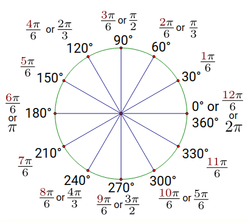
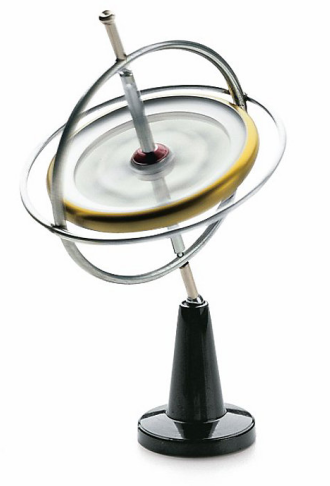
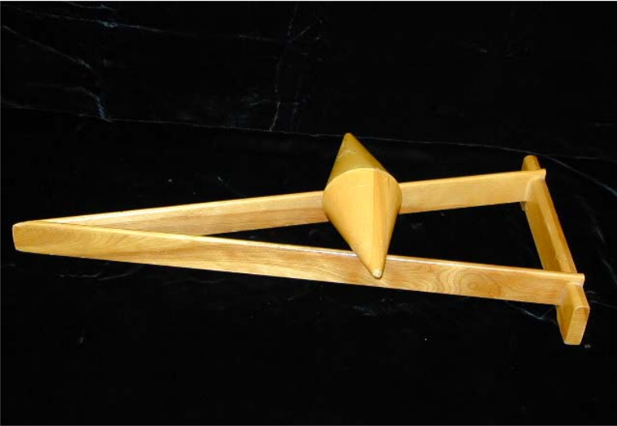

Hvilke oplysninger har I brug for?
Størrelser
| \(T\) | Periode |
| \(\omega\) | Vinkelhastighed |
| \(v\) | Hastighed/fart |
| \(f\) | Frekvens |
| \(O\) | Omkreds |
| \(r\) | Radius |
Formler

Udfør jeres beregninger.
Hvilke oplysninger har I brug for?
Udfør jeres beregninger.
Hvad ser I?
Hvilke oplysninger har I brug for?
\[F_G = G \cdot \frac{m\cdot M}{R^2}\]
\[F_{res} = m \cdot a = m \cdot \omega^2\cdot r = m \cdot \frac{v^2}{r}\]

